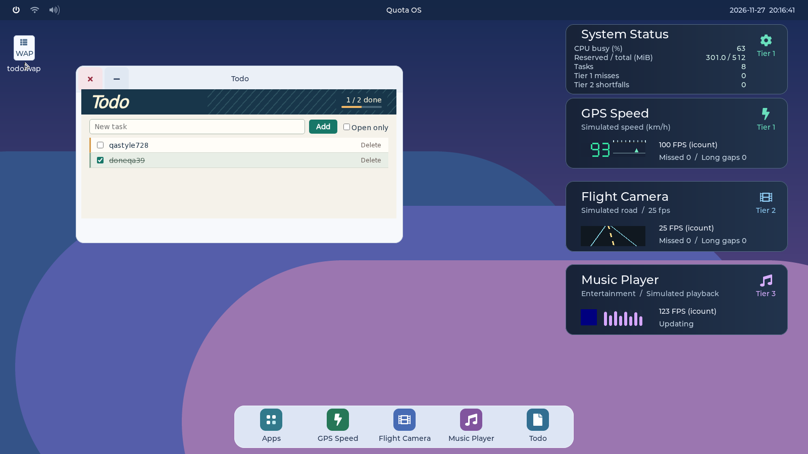
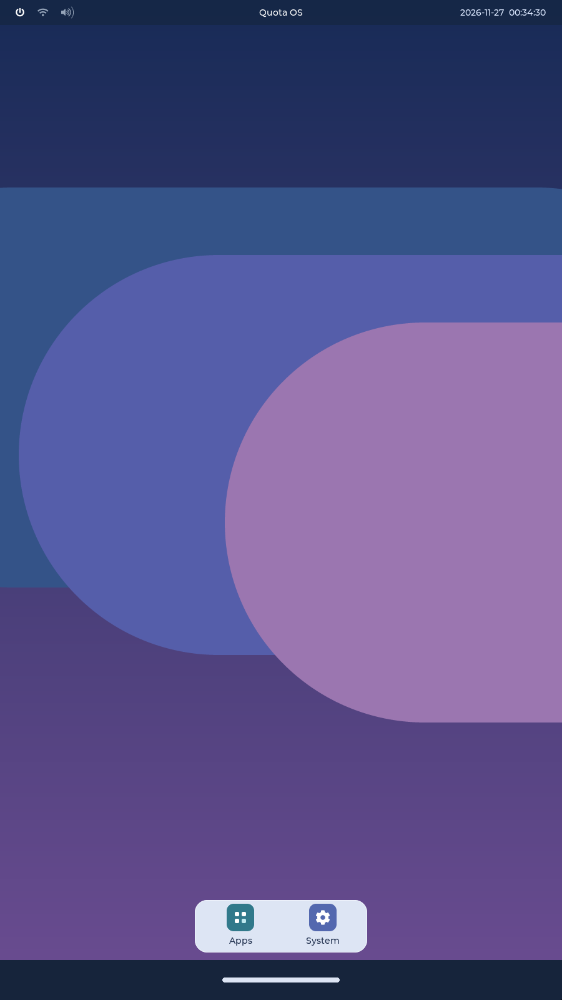
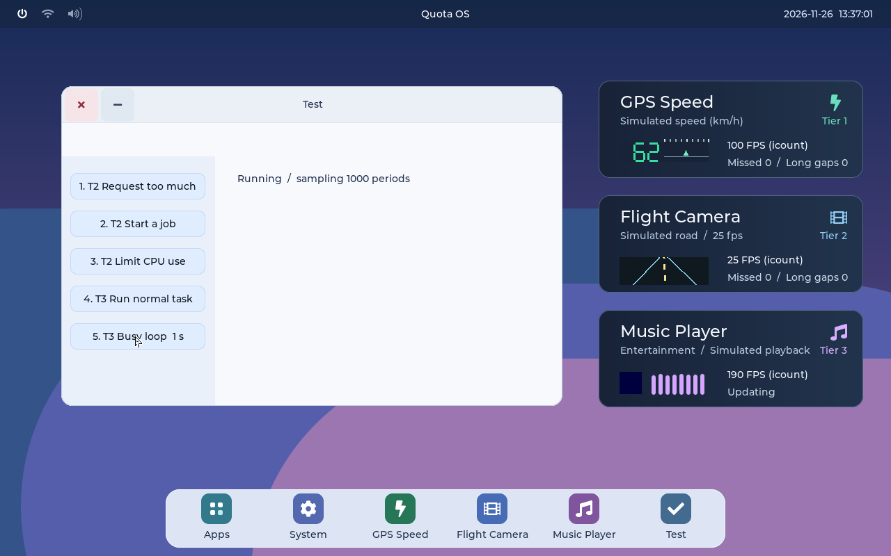

TIER 1
Vendor reserved
GPS Speed and timer service use fixed CPU slots.
ARM64 / RESOURCE-PARTITIONED OS
Quota OS is an ARM64 operating system. It reserves CPU time for critical tasks, admits applications when capacity is available, and shares spare time among ordinary workloads.


RAM is the guest memory allocated by the standard and macOS launchers. Boot image sizes are uncompressed. ls and ls / list the mounted ext4 root. Use cat /filename to read a text file from that disk.
The sample apps GPS Speed, Flight Camera and Music Player show their tier on the right of each card. Flight Camera animates simulated lane markings at a target of 25 FPS.
TIER 1
GPS Speed and timer service use fixed CPU slots.
TIER 2
Flight Camera starts with user approval and sufficient capacity for its declared minimum.
TIER 3
Music Player and desktop interaction share remaining CPU time under a common cap.
CLI provides a serial console and a separate, on-demand EL0 Test application. GUI adds the native LVGL desktop. Web UI adds the Tier 3 WAP runtime with Blink, V8 and Node.js. Touch UI provides 900 × 1600 portrait applications and a bottom gesture bar.
All four editions support command-line executables compiled from C for Quota OS. In CLI, run them from the shell over the serial console. In GUI, Web UI and Touch UI, open Shell from the desktop to run them.




A minimum share for a group of threads, a periodic budget for one thread and a scheduled window for a partition serve different needs. The table compares who receives CPU time and how each scheduler enforces the allocation.
| System and mechanism | Unit of allocation | How scheduling works |
|---|---|---|
| Quota OS | Application tier | GPS Speed runs in a fixed slot. Flight Camera receives a periodic budget after user approval and a capacity check. Music Player shares the capped remainder with other Tier 3 apps. Kernel quota implementation |
| QNX APS | A partition of threads | A partition has a minimum CPU share measured over a moving window. A busy partition can use time that others leave idle. QNX scheduling guide |
| seL4 MCS | A scheduling context bound to a thread | Each context has a budget and period. During synchronous IPC, a client can lend its context to a passive server so the work is charged to the caller. seL4 scheduling tutorial |
| Linux SCHED_DEADLINE | A thread requesting deadline scheduling | The thread specifies runtime, relative deadline and period. The kernel checks bandwidth before admission and schedules by deadline. By default, a thread that exhausts its budget waits for replenishment. Linux scheduler documentation |
| VxWorks 653 | A configured application partition | The module runs partitions in scheduled windows. Within a window, the partition scheduler selects tasks by priority. At the boundary, the module switches to the next scheduled partition. Wind River partitioning guide |
The historical tests below recorded scheduling periods and guest framebuffer commits in single-core ARM64 QEMU. Display latency across these systems on identical hardware remains unmeasured.
GUI defaults to two vCPUs and 64 MiB. Web UI and Touch UI default to two vCPUs and 512 MiB. The maximum guest framebuffer submission intervals are targeted at 10 ms for GPS Speed and 40 ms for Flight Camera. Both published 100-run series used single-core images. Equivalent dual-core results are pending.
Each edition ran through 100 cold boots. In every run a Tier 3 task spun for ten seconds under memory and disk pressure. QEMU virtual-clock ticks marked each guest framebuffer submission.
| Configuration tested | Runs passed | GPS Speed frames / maximum gap | Flight Camera frames / maximum gap |
|---|---|---|---|
| GUI · 1 vCPU · 64 MiB | 100 / 100 | 100,359 / 10.000 ms | 25,091 / 40.000 ms |
| Web UI · 1 vCPU · 1 GiB | 100 / 100 | 100,755 / 10.000 ms | 25,184 / 40.000 ms |
Across all 200 runs, no interval between consecutive submissions exceeded its 10 ms or 40 ms limit in raw QEMU icount ticks. Neither edition recorded a missed submission deadline, a Tier 2 budget shortfall or a Tier 3 pool overrun. Timing ends at the guest framebuffer write. Host presentation and physical display latency remain unmeasured.


Download the ARM64 image and launch instructions ↗
To run from a local checkout, install Git and QEMU with ARM64 system emulation, then run:
git clone https://github.com/leiquan/Quota-OS.git
cd Quota-OS
bash tools/run-files.shRead the README and test records ↗
To run the 900 × 1600 portrait edition, follow the Touch UI source build and setup guide.